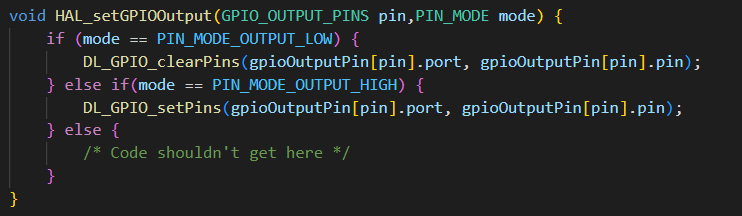
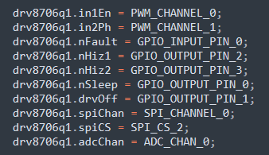
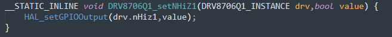
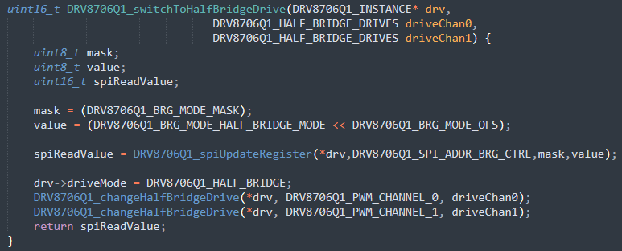

库软件概述¶
1.概述¶
MSPM0 的有刷电机控制库由两个关键模块组成。一个是 HAL 模块，它提供应用程序编程接口 (API) 来操作和配置 MCU 引脚和外设。另一个是电机驱动器模块，它提供 API 来控制电机驱动器。

图 1 - 显示模块和应用程序如何彼此交互的图表
2.HAL 模块¶
2.1 概述¶
HAL 模块是一个微控制器抽象层，提供通用 API 来控制和配置微控制器的引脚和外设。开发 HAL API 是为了在无需更改电机驱动器模块任何代码的情况下来更改所用的 HAL 模块。
HAL 专用于抽象处理控制电机驱动器所需的关键引脚和外设。用户可随意扩展 HAL 的 API 以支持微控制器的其他外设和特性，但为确保能轻松迁移到该库的新版本，强烈建议不要修改现有的 API。
HAL 层或其 API 中不应存在应用特定或电机驱动器特定的代码，而是应以通用方式处理引脚和外设。例如，电机驱动器可能具有一个 nSLEEP 引脚，但 HAL 层将仅提供 API 来控制 GPIO 输出引脚的状态。电机驱动器模块负责将特定的 HAL GPIO 输出引脚关联到电机驱动器的 nSLEEP 引脚。
2.2 枚举¶
HAL 层利用大量枚举来提供对不同引脚和外设的通用引用。如上所述，HAL 层负责指示与每个枚举值相关联的物理引脚和外设。这可让 HAL 更改与给定枚举值相关联的引脚或外设，而无需对使用其 API 的任何代码（例如电机驱动器模块）进行更改。作为示例，我们来仔细看看 GPIO_OUTPUT_PIN_2 枚举值。

图 2 - 表示 GPIO 输出引脚的枚举示例
图 2 显示了表示 5 个不同 GPIO 输出引脚的枚举示例。该枚举旨在为 HAL 和电机驱动器 API 提供一种引用 GPIO 输出的通用方法。HAL 可以随意决定其想要支持的 GPIO 输出引脚的数量。开发人员需要记住其想要支持的不同电机驱动器所需的 GPIO 输出引脚数量上限。

图 3 - 枚举到 MCU 引脚的映射
图 3 显示了 LP-MSPM0L1306 HAL 的代码片段，其中显示了 GPIO_OUTPUT_PIN_2 枚举现在如何与 MSPM0L1306 上的特定 GPIO 相关联。GEN_GPIO_OUTPUT_XXXX 定义来自 TI Sysconfig，这将在后面论述，但请注意，每个定义都表示 MSPM0 的 driverlib api 操作特定引脚所需的值。

图 4 - HAL API 示例
现在，HAL 提供了将枚举关联到特定引脚所需的信息，HAL_setGPIOOutput 显示了用于更改引脚（与给定 GPIO_OUTPUT_PINS 枚举相关联）输出值的 API。这里需要注意如何利用 HAL 中的内部结构和数组将枚举值转换为 MSPM0 的 driverlib api 调用。

图 5 - 电机驱动器到 HAL 的映射
这是一个 DRV8706-Q1 示例程序的代码片段，它将不同的 HAL 枚举与电机驱动器上的相应引脚相关联。这里，电机上的 nHiz1 引脚映射到 GPIO_OUTPUT_PIN_2。

图 6 - 电机驱动器模块 API
最后，当用户想要更改 DRV8706-Q1 电机驱动器上 nHiz1 引脚的输出值时，他们可以使用通用 HAL API，同时提供与 nHiz1 相关联的枚举值来进行更改。 尽管此示例侧重于 GPIO_OUTPUT_PINS 枚举，但对于所有其他引脚和外设（HAL 已为其创建了枚举），例如 PWM、ADC、gpio 输入和 SPI 枚举而言，概念都是相同的。
2.3 TI SysConfig¶
MSPM0 支持名为 TI SysConfig 的软件，该软件旨在利用 GUI 工具简化引脚和外设的配置。几乎所有 MSPM0 SDK 示例都使用 SysConfig，并且 SDK 和网上还有其他文档深入介绍了 SysConfig 的工作原理和使用方法。但需要注意的是，SDK 提供的 HAL 模块使用 SysConfig，因此您不会看到通过 driverlib API 调用来初始化外设和引脚。HAL 会使用由 SysConfig 创建的定义将特定引脚和外设映射到不同的通用 HAL 枚举。图 3 显示了由 SyConfig 创建的 GEN_GPIO_OUTPUT_XXXX 定义如何映射到 HAL 结构和枚举值。
3.电机驱动器模块¶
电机驱动器模块的两个关键目标是将代表 MCU 引脚的 HAL 枚举与电机驱动器的物理引脚相关联，并提供 API 以使用户轻松控制电机驱动器。图 7 显示了 DRV8706-Q1 电机驱动器使用的内部结构，及其如何包含用于将 HAL 枚举与电机驱动器特定引脚（例如 nHiz1 和 nHiz2）相关联的变量。

图 7 – DRV8706-Q1 内部结构
3.1 电机驱动器引脚关联¶
电机驱动器引脚到特定 HAL 枚举的映射是在用户应用程序中完成的，如下面的代码片段所示。
图 8 - 电机引脚到 HAL 引脚的映射
3.2 电机驱动器 API¶
电机驱动器模块 API 特定于给定的电机驱动器，旨在简化目标电机驱动器的关键常见配置，同时也为用户提供构建基础。例如，DRV8706-Q1 具有许多用户常用的驱动模式，如半桥和相位使能模式。切换到这些不同的模式是一个多步过程。因此，DRV8706-Q1 模块具有一个简单的 API，可通过单个 API 调用执行所有这些步骤。图 9 显示了切换到半桥模式的 API。

图 9 - 电机驱动器模块 API 示例
以 DRV8706-Q1 为例，它具有的众多寄存器设置是很多用户不会使用或更改的。因此，您不会看到大量用于操作不同寄存器的 API。但是，如上所示，有一个执行 spi 读取-修改-写入操作的 spiUpdateRegister 函数，使用户可以轻松修改其特定应用程序需要更改的寄存器位字段。该函数是简单调用 API 的一个典型示例，用户可以在此基础上进行构建、扩展电机驱动器模块以满足其应用程序的需求。
3.3 如果您仔细研究电机驱动器模块的代码，就会发现由于使用了 HAL API，代码往往非常简单。操作微控制器的复杂性隐含在了 HAL 模块中，这使得开发电机驱动器模块变得非常简单。这意味着您可以对该库不提供额外支持，或您想要更适合于您的目标应用时，轻松创建自己的电机驱动器模块。需要注意的是，为确保您自己的电机驱动器模块具有灵活性和可重用性，请确保该模块仅调用 HAL API。¶
如果您仔细研究电机驱动器模块的代码，就会发现由于使用了 HAL API，代码往往非常简单。操作微控制器的复杂性隐含在了 HAL 模块中，这使得开发电机驱动器模块变得非常简单。这意味着您可以在该库不提供支持，或您想要更适合于您的目标应用时，轻松创建自己的电机驱动器模块。需要注意的是，为确保您自己的电机驱动器模块具有灵活性和可重用性，请确保该模块仅调用 HAL API。